CrystalPlan 1.1 User Guide
by Janik Zikovsky (zikovskyjl@ornl.gov)
Document started April 14, 2010; Last modified on {{date}}.
Introduction
CrystalPlan is an experiment planning tool for crystallography; CrystalPlan...
- Lets you put in a list of sample orientation angles, and...
- ...calculates the coverage of detectors in reciprocal space.
- When you give it your sample's lattice parameters and UB matrix, it...
- ...predicts the positions of single-crystal peaks.
- You can then optimize your experiment by trying different orientations and seeing if your coverage statistics will still be adequate.
Table of Contents
{{toc}}
Quick Overview of CrystalPlan
Step-by-Step Tutorial
This tutorial will show you how to use most of the features of CrystalPlan by going through a typical run, step-by-step.
Starting CrystalPlan
From the terminal command line, type:
crystalplan.py
The GUI launches in two new windows. Select the main window:
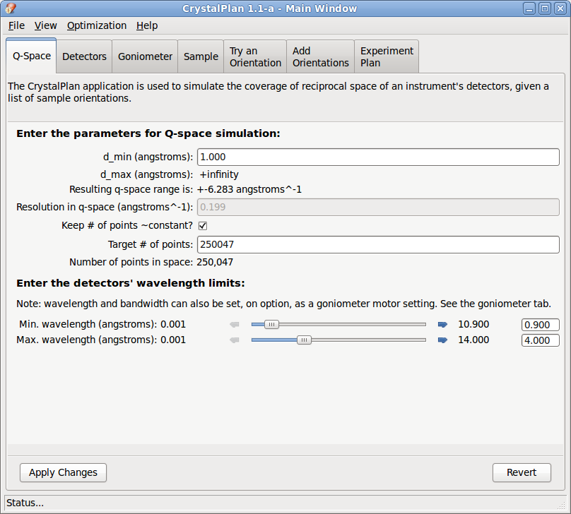
Most of your workflow will occur by navigating between these notebook tabs:
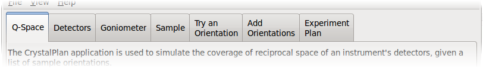
Defining the Reciprocal Space of Interest and Wavelengths
Here you will set the general parameters of your experiment.
- Click the "Q-Space" tab, if it not already selected. If necessary, change the parameters so that it matches those shown below:
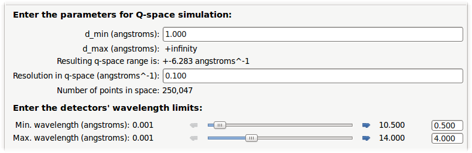
- d_min
- The smallest d-spacing allowed. Your simulated q-space will be limited to a maximum
$q_{max} = {2\pi}/d_{min}$
- q-resolution
- The size of a voxel (smallest volume element) simulated, in $\AA^{-1}$. The # of points will be calculated and shown below; you will get a warning if you try to make very high-resolution calculations, because memory consumption, etc. will be very high.
- wavelength limits
- Specify your experiment's wavelength limits, in Ansgtroms; this could be due to limits on your neutron source or your detectors.
- When done, click the
 button. Changing these settings requires re-doing a lot of calculations, which may take some time if you have a lot of orientations saved.
button. Changing these settings requires re-doing a lot of calculations, which may take some time if you have a lot of orientations saved.
Detectors
Here, you ensure that CrystalPlan has the correct detector geometry loaded.
- Click the "Detectors" tab.
- Load a detector geometry by clicking the
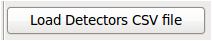 button. In the File Loading dialog that opens, select the "TOPAZ_detectors_all.csv" file.
- After a few seconds, the detector geometry is loaded. To confirm that the detectors are in the correct positions, you can visualize them in direct space by clicking
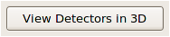,
which displays them in a window like this one:
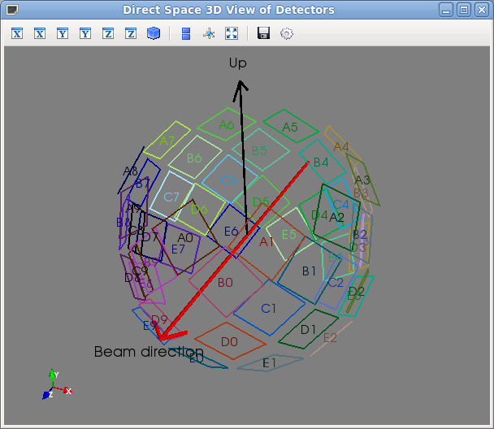
- There are additional controls on this tab that are not commonly used:
- The list of detectors has checkboxes. You can uncheck a detector to indicate that it will not be used in the experiment (perhaps it is obscured or malfunctioning).
- The Coverage Stats button calculates the coverage of each detector. The Select Best Detectors selects the best detectors based on these coverage statistics.
Goniometer
Now, you want to make sure that CrystalPlan is aware of which goniometer is currently in
use in your instrument.
- Click the "Goniometer" tab. The goniometer that is currently selected is shown at the top:
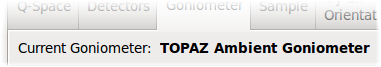
- This interface allows you to modify some settings of the goniometer.
- For instance, you can choose to make your goniometer control the measurement wavelength by checking the "Wavelength control" box.
- The goniometer will then have an extra "angle" controlling the center of the measurement wavelength.
- You have parameters to set the bandwidth as well as a minimal wavelength that you cannot go below.
- Depending on the goniometer, there may be extra settings you can change. As always, hover the mouse over an entry to get helpful pop-up hints.
- To edit advanced settings of the goniometer, click the 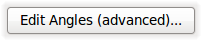 button. Settings such as the units and range of each angle can be changed in the dialogs that pop up.
- If you make any changes, don't forget to click on the 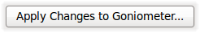 button to apply them. This may clear your experiment plan, if necessary.
- Select the TOPAZ in-house goniometer:
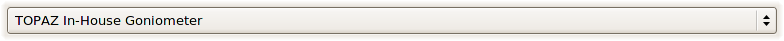
- Some general information about the goniometer is shown:
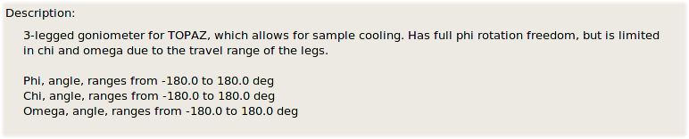
- But your selection is not complete until you click
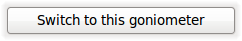
- The program will now be aware of the sample orientation angle limitations that your instrument has, and will give you warnings if you try to use an inaccessible sample orientation.
Sample Settings
Now, you will want to enter or load in information about your sample: crystal lattice parameters, UB matrix, etc.
- Click the "Sample" tab. You are presented with an overview of the crystal parameters
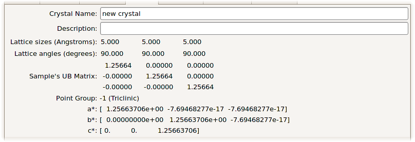
Edit Crystal Parameters dialog
- Click
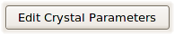.
- This brings up the "Edit Crystal Parameters" dialog box. You may edit the name and description:
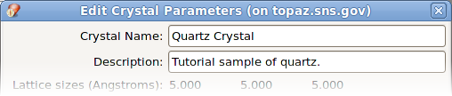
- The top of the dialog shows you the current crystal parameters.
- The "Manually Enter Lattice" tab
allows you to try out the program by typing in
your lattice parameters and the sample mounting.
Clicking the
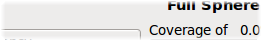 button would create a UB matrix that you can use to test features of the program; however we will not be doing that in this tutorial.
- Instead, go to the "Load from ISAW" tab:
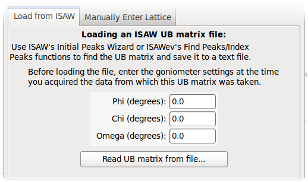
- If this were a real experiment, at this point you would have had acquired an adequate set of data at a starting sample orienation, and saved the run.
- You would then load that data into ISAW in order to find the sample orientation.
- ISAW can generate a UB matrix file that contains:
- The crystal's measured UB matrix - this contains information about how the crystal is mounted relative to
- The crystal's lattice lengths and angles.
- To learn how to calculate a UB matrix, please refer to ISAW's documentation. Using ISAW, you will be using the Initial Peaks wizard to locate and index the peaks. This method can be used to find both the lattice parameters and UB matrix, or you can specify the lattice parameters if known.
- You can also generate the same file using ISAWev (the ISAW event viewer), working directly from event data in reciprocal space. The procedure is the same (find and index the peaks) though the interface is a little different. Both methods generate exactly the same file format.
- However, the UB matrix output by ISAWev includes the orientation due to the goniometer and not just the crystal mounting orientation.
- The UB matrix needs to be corrected to account for this extra rotation.
- This requires you to enter the goniometer angles corresponding to the sample orientation in the UB matrix file to load - the goniometer settings at the time that data was acquired.
- Enter these angles, in degrees, here:
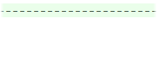
- This is NOT necessary for ISAW, which DOES take into account the goniometer angles. Leave the angles at 0.0 for these UB matrices.
- A sample UB matrix file can be found in the "model/data/quartzub.txt" file. Click the
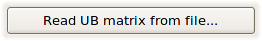
button and select this file in the dialog.
- The top of the dialog shows you the loaded lattice parameters and UB matrix.
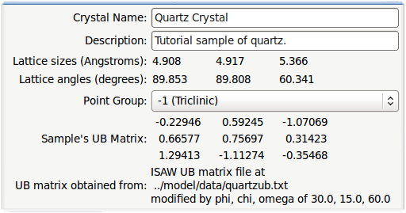
- From here, you can set the crystal's point group symmetry; however, we will leave it as "-1 (Triclinic)", as shown.
- Click
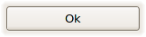
to apply the changes; clicking
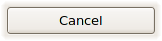
would revert all the changed made in the dialog.
- Some recalculations will occur when changing the crystal lattice parameters or orientation.
Choosing H,K,L ranges
- Still in the Sample tab, the following GUI allows you to pick which HKL to display:
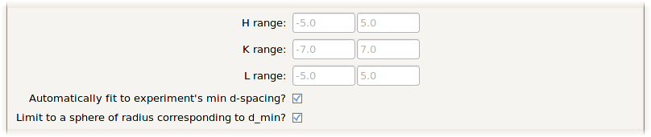
- These H,K,L ranges limit which peak indices that CrystalPlan will calculate and display.
- You can type in your ranges manually, however, I recommend that you keep both checkboxes checked:
- They use the d_min parameter you set earlier in the "Q-Space" tab.
- The first checkbox tells CrystalPlan to calculate the H,K,L ranges that fill a box of side in q-space corresponding to
$d_{min}$.
- But, the resulting peaks will form a cube only if all the lattice angles are 90 degrees.
- By checking the second box, any peaks with a d-spacing smaller that d_min will be rejected, leaving a sphere of reflections in q-space.
- Click the 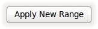 button to apply
any changes you have made. All reflections are re-calculated.
- Be aware that for large cells, the number of reflections within a given
$d_{min}$
may be very large, slowing down calculations and requiring a lot of memory.
Trying Sample Orientations
At this point, we have given the program all the information it needs to start predicting what we can measure. We will now tell it what sample orientations we will try.
- Click on the "Try an Orientation" tab.
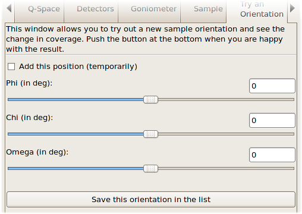
- Check the 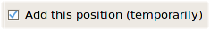 box.
- Now, you simulate a sample orientation.
- As you change the values, the coverage calculation is re-done and updated in the 3D viewer (which we will look at next).
- Use the slider or type in (and press Enter) to set a Phi angle of 30 degrees, while keeping the other two angles at 0 degrees.
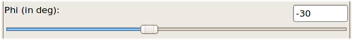
The Reciprocal Space 3D Viewer
Congratulations on making it this far! We will now look at the result of
our simulated detector coverage.
- Switch window to the Reciprocal Space 3D Viewer (this window opens with CrystalPlan, so it should already be open - otherwise, you can open it from the "View" menu).
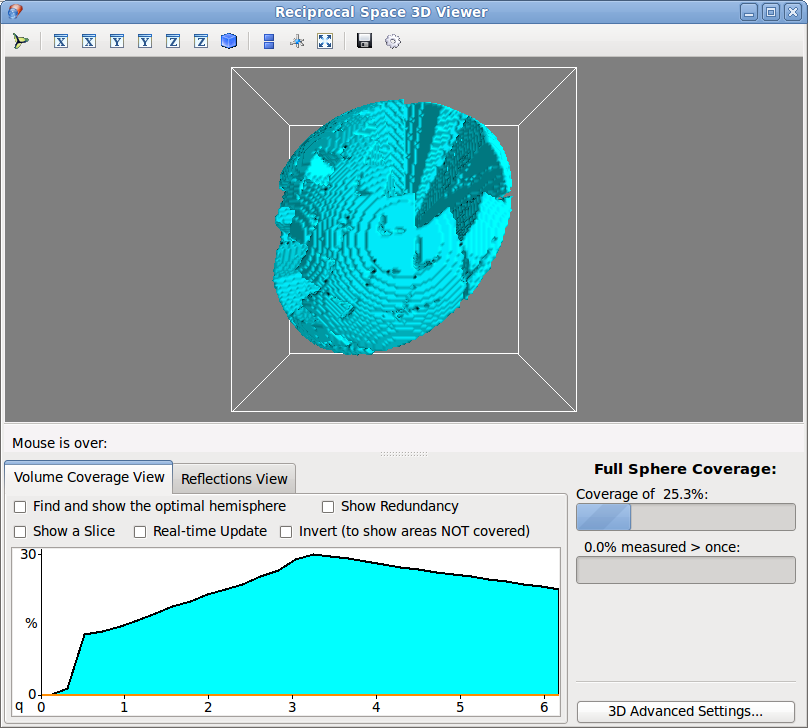
- The main part of the window is a 3D view of reciprocal space.
- The white cube outline represents the extent of q-space that is simulated.
- The center of the cube is q = [0,0,0], which corresponds of course to h,k,l = [0,0,0]
- The cube is sized so as to just hold a sphere of radius
$q = \frac{2\pi}{d_{min}}$
- Right now, we are in "volume coverage" mode, which means that the shapes shown in cyan correspond to the volume in reciprocal space that has been measured by a detector.
- When a "voxel" (volume pixel) has been measured once, it is marked as a value of "1".
- The surface you see is the isosurface (the edge between 0 measurements and 1 measurement).
- The "sharpness" of this 3D view is determined by the q-resolution you specified in the "Q-Space" tab at the beginning. You can change this resolution at any time, and the coverage will be recalculated at this new resolution.
- You can interact with the 3D view in a number of ways:
- Click the left mouse button and drag to rotate the view around the center.
- Hold SHIFT (or use the middle mouse button) to pan the scene around.
- Hold CTRL to rotate the scene only around the camera's axis (roll).
- Hold SHIFT+CTRL (or use the right mouse button) to zoom in and out by moving the mouse.
- Use the mouse wheel to zoom in and out.
- Press = and - to zoom in and out.
- Press R to reset the zoom level and center the camera.
- Press 3 to enable two-colour 3D rendering (with cyan/blue glasses you could see it in "real" 3D a la a 1950's B-movie :-) )
- The buttons at the top of the view, from left to right, are:
- 6 buttons to reset the views quickly, facing the given directions.
- Default isometric view.
- Turn on orthographic projection (no perspective effects - this is very handy when looking a ordered peaks).
- Display the 3D axes.
- Go fullscreen (press Esc to go back)
- Save a screenshot.
- We will return to this window to explain the elements in more detail.
- For now, you can change the Phi angle in the "Try An Orientation" tab and visualize how that
affects the reciprocal space coverage in this window. This animation shows the effect of changing the phi of the sample from -180 to +180 degrees:
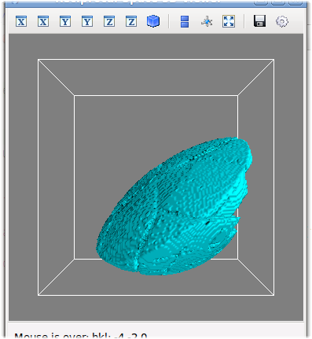
- And this animation shows a chi (tilt) rotation from -180 to +180 degrees, with phi kept constant:
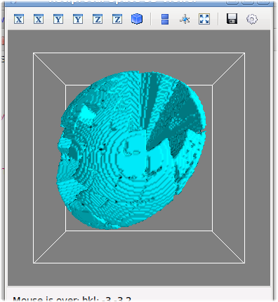
Goniometer Limits
- Back in the Main Window's "Try Position" tab, try to set a Chi angle of +45 degrees:
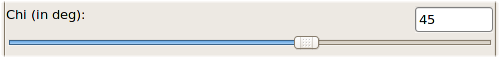
- ... and you will see the following warning message:
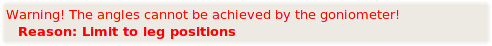
informing you that you have tried a sample orientation that is not achievable by
the selected goniometer.
- Not all goniometers have such limitations; for instance, if you select the "Simple Goniometer", there are no limits to the angles you can reach.
- However, the currently selected "TOPAZ In-House Goniometer" is limited in Chi tilt because of its design (a 3-legged "tripod" design). It can only tilt by a few degrees above or below zero.
- CrystalPlan calculated which angles are possible and warns you if they are not. A string describing the reason why this angle is not possible is displayed, if available.
- You can still simulate this sample orientation, but be aware that you will not be able to achieve it experimentally.
Adding Several Sample Orientations
Now, we will start building up an experiment plan by adding sample orientations.
- First, uncheck the box; this will remove the "trial" position from the coverage calculation.
- Switch to the "Add Orientations" tab.
Entering Lists of Angles
- Near the top of the window, you will see 3 text boxes where you can enter lists of angles to simulate:
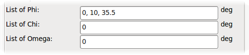
- You can enter lists in 3 ways, based on Python script:
- A simple list separated by commas: "10, 22.5, -180". You do not need to include square brackets.
- An evenly divided linear range: "linspace(start, stop, steps)" will give you steps points, evenly divided from start to stop (inclusive).
- A range of values in fixed steps: "arange(start, stop, step_size)" will step starting at start, go up in steps of step_size, until you reach stop - but does not include stop.
- Angles are stepped through for each list: for example, if you put lists containing 5 phi angles, 4 chi angles, and 2 omega angles, your resulting list of sample orientations will have 40 phi, chi, omega combinations.
- You don't have to put in lists - you can also put in a single value for each angle, giving a single sample orientation.
Checking Validity of Orientations
- Enter the following values in the angle lists:
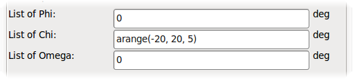
- You should see the following text below the angles:
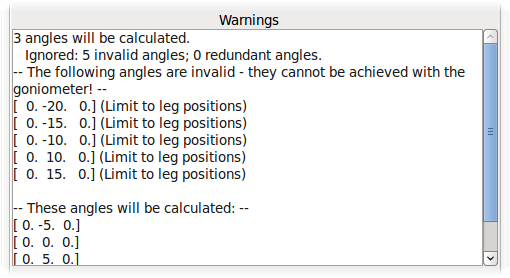
- This box tells you that some of the angles you supplied were not achievable with the goniometer, and why. These angles will not be calculated.
- The remaining sample orientations will be calculated.
Adding Sample Orientations To Plan
- Enter the following values in the angle lists:
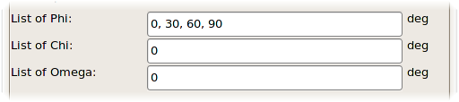
All of these sample orientations are possible.
-
When you have entered your lists of angles, click the "Start" button to begin the calculation.
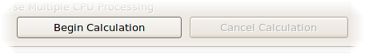
- The program now calculates the coverage at each sample orientation, and saves it in the
experiment plan (which we will see in the next section).
- The calculation progress will be shown in this progress bar:
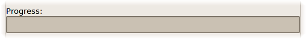
- If the calculation runs too long, you can cancel it before it completes. Sample orientations that have already been calculated will remain in the experiment plan.
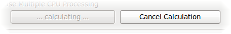
- Another way to add sample orientations is to click the
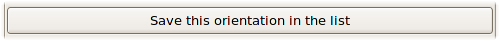 button,
in the "Try an Orientation" tab. This adds to the experiment plan whatever sample orientation angles you tried by setting those sliders.
The Experiment Plan
Switch to the "Experiment Plan" tab. Here, you see a grid with a list of all the sample orientations that have been calculated up to now:
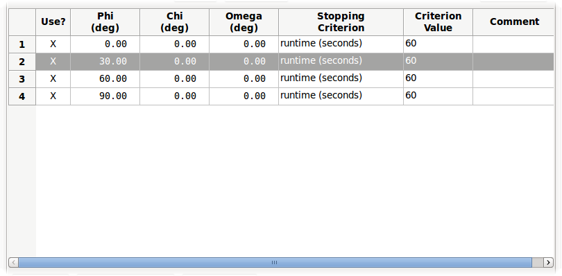
- Each row lists the sample orientation angles you will use (typically 3 angles, phi, chi, omega).
- The first column has a checkbox (X) if you are going to use this sample orientation in the experiment. Double-click to uncheck or recheck the box.
- When you do so, the coverage corresponding to this sample orientation is removed from the total.
- The Stopping Criterion and Criterion Value columns allows you to specify how long to do the measurement for that particular sample orientation. You get a drop-down list of a few options (the exact list and function is determined by the DAS group):
- runtime
- The time to acquire data, in seconds.
- proton charge (or pcharge)
- The accelerator proton charge total, in picoCoulombs. This criterion has the advantage of giving consistent counts, even if the accelerator goes down for some time during your run.
- counts
- The total neutron count (over all detectors).
- monitor counts
- The neutron count at the monitor.
- roi counts
- The neutron count only in the region-of-interest (roi) on a detector. The roi will be defined on the DAS computers.
- As you change the runtime criteria, the following text box gives you an estimate of the total experiment time:
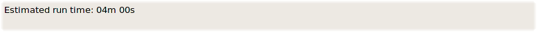
Some of the criteria, such as the counts, do not allow a time to be estimated, since the counts/second cannot be known ahead of time.
- You can manipulate the entries in the following ways:
- You can highlight one or more rows (try Ctrl-clicking on the row numbers, or select a block with the mouse).
- These buttons allow you to select orientations to use in the experiment:
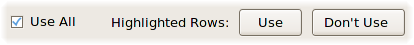
- These buttons allow you to delete orientations from the experiment:
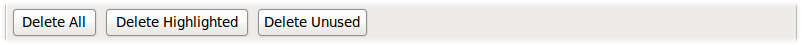
- When you are happy with your experiment plan, click the
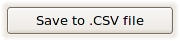
button to make a CSV (comma-separated values) file containing the list of sample orientation and runtime criteria. This file can then be loaded on the DAS computers (using PyDas, for example) to run the experiment. Note: CrystalPlan cannot re-load these CSV file; if you need to do this, you should ALSO save as a .exp file (see below).
- You can also save your experiment to CrystalPlan experiment format (normal file extension: .exp), from the File->Save Experiment to file Menu. Later, you can re-load this using the File->Load Experiment from file Menu, and
continue your work.
- A very useful feature is the automatic coverage optimizer, covered in this section. Click the
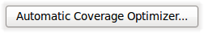
button to open the window, or press Ctrl+O.
More Reciprocal Space 3D Viewer Options
Now that we have more sample orientations in our plan, we return to the 3D viewer and explore some of its options. Here is what the 3D view looks like with the 4 orientations we have calculated:
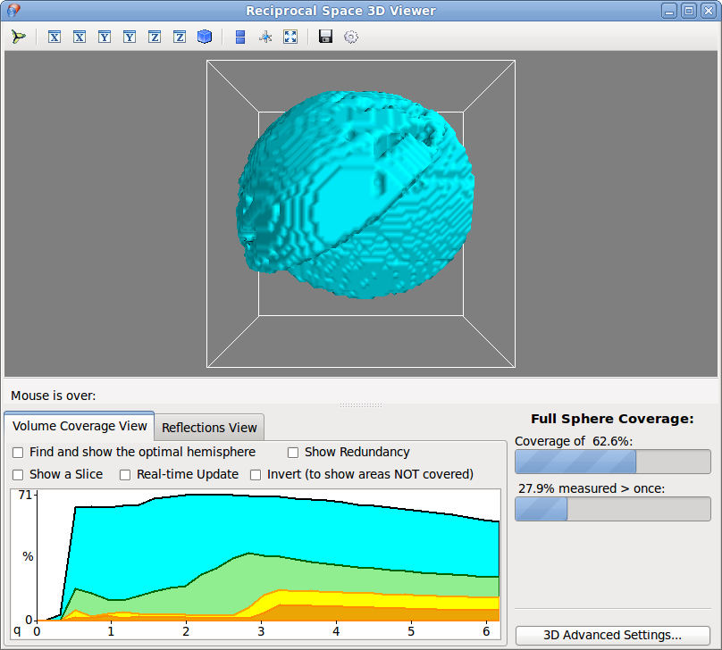
Coverage Statistics
- On the bottom right, you can see the coverage statistics panel:
- The first bar indicates what percentage of reciprocal space volume was measured (at least once).
- The second bar shows the redundant measurements - the proportion of q-space that was measured at least twice.
|
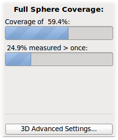 |
Slice Plot
- On the bottom left is the slice statistics plot:
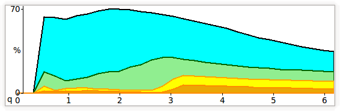
- This plot calculates the % coverage of a thin shell centered on a q starting at 0 and ending at
$q_{max} = {2\pi}/d_{min}$.
- The light blue plot is the percentage measured at least ones; in green is the percentage measured twice, yellow for measured 3 times, and orange for 4 times or more.
- This plot can use d-spacing for its horizontal axis. This is set in the Preferences, under the Main Window's "File" menu. Minimize and restore the window after changing the setting in order to
refresh the display.
Hemisphere View
- Since all crystals have at least inversion symmetry (-1 point group) in scattering, that means that measuring a hemisphere of reciprocal space is enough to fully characterize your sample.
- Check the
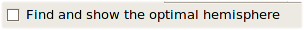
box to find and display only the "optimal" hemisphere. The program will find the side of reciprocal space with the most coverage, and ignore the rest, not displaying it at all:
- The coverage stats also reflect this choice - the coverage is compared to the volume of the optimal hemisphere, not the whole sphere; therefore your % covered will typically be higher, as seen above.
Inverted View
- You can also check the
box to invert the coverage map, and show the volumes not measured.
The next image shows the inverted coverage with the hemisphere box still checked - showing the volumes not covered but only in the hemisphere of interest.
- This can make it a lot easier to see spots you have missed, especially if they are hidden by covered volume.
Redundancy View
- If you check the box,
you will get a view of the redundancy of the measurement - how many times each voxel was measured. Semi-transparent isosurfaces are color-coded to show a single measurement, then 2, then 3, and finally 4 or more measurement.
Slice View
- Check the
box
to view only a slice, (or shell) at a given q radius and given thickness.
- The Slice Plot now shows a hatched bar that you can move with the mouse to change the shell position and thickness.
- Click and drag the center of the area to change the q-radius
- Click and drag the edges of the area to change the thickness.
- When the slice control has focus (just click on it), you can use the keyboard too:
- Left and right arrow keys move the slice a little.
- PageUp and PageDown move the slice more.
- The 3D view is updated to show only the selected slice of q-space:
- ... and this also works with redundancy:
3D Reflections View
Another way to measure your experimental coverage is by looking at single reflections, instead of viewing volume coverage in reciprocal space, as we have been doing before.
- To switch to reflection view, clikc on the "Reflections View" tab. Instead of volumes, you now see a number of color-coded points:
- The color-coding matches those in the volume view and the slice plot, with the addition of the dark blue peaks: those are peaks that will not be measured.
How to Display Reflections
- You can change the way the peaks are drawn, in order to make the rendering clearer.
- Peaks can be displayed as small spheres (which look bigger when you zoom in) or pixels (which remain the same size).
- You can adjust the size of the spheres/pixels, or use the "Automatic" checkbox to let the program pick.
Which Reflections to Display
- In the drop-down box , you can mask out reflections, leaving only the ones you want to see.
- Here is what is shown if you select to show only the peaks that are predicted to be measured
- The statistics panel tells you how many reflections are in the experiment, and what percentage were measured once, and twice or more.
Using Crystal Symmetry
- By checking the box, you will take the crystal symmetry into account when considering peaks.
- HKL peaks that are equivalent, due to symmetry, are considered to be the same.
- Here is what is shown if you use symmetry:
- Note how only half of the reflections are visible. This is because the crystal is set to inversion (-1) point group symmetry, meaning that every [h, k, l] has one equivalent reflection at [-h, -k, -l].
- The program only displays the "primary" [h,k,l], and the number of measurements of [h,k,l] and [-h, -k, -l] are added together to do the color-coding.
- Note how the statistics tab now shows a much higher percentage of reflections having been measured at least once, thanks to the symmetry of the crystal. The number of unique reflections is also shown.
- Higher symmetries will show even fewer points.
Parallel Projection
- Parallel projection (as opposed to perspective projection) can be a useful way to visualize reflections in reciprocal space.
- Click the icon in order to toggle parallel projection on/off. With parallel projection, our crystal looks like this:
Selecting Reflections
- Right-click on a point in the reflection view to select it. It becomes highlighted with a small cube, and a separate window ("Single Reflection Info") pops up, as shown below:
- When the Single Reflection Info window is up, another way to select a reflection is to type in the H K L indices of the peak of interest. If the peak is out of range (was not calculated), the boxes turn red:
- Type in an H,K,L of 3, 2, and -4, and the selected reflection changes:
- Check the box and the equivalent hkl's will be displayed in the same list. In this case, -3, -2, 4 is the equivalent HKL:
- The Q-vector and corresponding d-spacing of this hkl are shown.
- Each entry corresponds to a different sample orientation where the reflection was measured.
- Several pieces of information are shown:
- The top line shows the sample orientation angles of that particular measurement, and the HKL at which the reflection was measured (relevant when the box is checked.
- wl
- The wavelength at which the peak is measured.
- Det.#
- The name of the detector on which this peak is measured.
- X and Y
- Positions on the detector face, with 0 as the center of the detector.
- 1/2-width
- The half-width of the spot, assuming the scattered beam has a divergence entered here:
. The black spot on the graphic also represents this divergence.
Comparing to Real Measurements
CrystalPlan allows you to compare your predicted measurements with the actual peaks found,
after you have acquired and saved your data.
Remember to save your full experiment to a .exp file, using the File->Save Experiment to file Menu,
to make it easier to reload the predicted measurements after completing your experiment.
- First, analyze your data using ISAW or ISAWev. You can generate a .peaks file (with the positions of the peaks only) or a .integrate file (with the integrated counts under the peaks also); CrystalPlan can load both.
- Use the File->Load an ISAW .integrate or .peaks file and browse to the file you created. You will be asked if you want to REPLACE or APPEND to the current measurements. Use APPEND if you need to consider several files, or REPLACE if one holds all your peaks.
- In the 3D viewer, under the Reflections View tab, you may have noticed this line:
- The "Color by" radio option allows you to change the color scale, using either the predicted number of measurements, or actually measured number.
- Crystal symmetry will be used in the same way for both color scales.
- The I/sigI threshold box allows you to specify what is the value of I/sigI (the intensity divided by its error) that is considered "measured". A value of 2.0 or 3.0 is typical; if you loaded a .peaks file (which has no intensity data), use 0.0 here otherwise no peaks will be visible.
- The drop-down box also has options to mask out peaks that were not measured. You can mix the color scale and masking; for example, it is particularly useful to plot all predicted peaks but use the color scale of measured peaks. That way, you can easily see which peaks were predicted but not measured.
- You can also view details of the actual measurements in the Single Reflection Info frame we saw previously. Each measurement at each HKL can be compared to its prediction.
The Reflection Placer
- Click the to bring up the reflection placer window:
- The HKL of the reflection you had selected, and the detector on which it was are pre-selected; but you can type in your own selections if you wish to place a particular HKL on a particular detector.
- The map in the center of the window represents the detector face.
- Click on the detector with the mouse, or type in values for the X/Y coordinates you want on the detector.
- The program calculates the sample orientation angles phi, chi and omega that will place the peak at that point.
- Note that the currently selected goniometer has limitations in chi tilt that make some areas not reachable - these are shown in red in the map. Green areas can be achieved; yellow areas are spots where the orientation is possible but the peak will be detected in a wavelength range that is outside the current range set in the Q-Space tab in the main window.
- With an unrestrained goniometer, there is a range of sample orientation angles that will place a peak at a particular point (think of it as performing a rotation of the peaks while keeping your peak of interest centered). However, for this goniometer, the program attempts to find a chi angle as close to zero as possible (since the goniometer is limited to a few degrees near zero).
- Click the button and the calculated sample orientation will be added to the current experiment plan.
Automatic Coverage Optimizer
The automatic coverage optimizer can automatically create an experiment plan (list of sample orientations) for you that satisfies your coverage requirements.
- You can start the optimizer from the "Optimization" menu in the main window, or using the
button from the Experiment Plan tab.
How Optimization Works; Setting Parameters
- This window uses the Genetic Algorithm method to optimize a list of sample orientations.
- The genetic algorithm method starts by creating a Population of a certain number of randomized individuals.
- Each individual has a Chromosome, which consists of a list of Genes; in this case, a gene is a single sample orientation (goniometer angles).
- The Fitness of each individual is calculated; in this case, the % of reflections measured is the fitness score; a higher score means an individual is 'better' or 'fitter'.
- At each generation, the best individuals are picked (through a random process that favors the fittest individuals) to go on to the next generation. With Elitism enabled, the best individual(s) of the previous generation is guaranteed to stay in the next generation. This is almost always very advantageous for convergence speed.
- Pairs of individuals are mated together to produce offspring. Normally, a Crossover method mixes the chromosomes of the two parents to form new individuals. In our case, mixing lists of sample orientations tends to randomize the result, so we keep the crossover rate low, and most children are clones of their parents.
- Randomly selected genes are Mutated; they can be either completely randomized (a new angle is chosen) or "nudged" by a random amount within a few % of the full range of values. Try either way at different times.
- On the left side of the window, you will find all the settings for optimizing the calculation.
- You can hover the mouse over the parameter to get a popup help hint, so we will not be repeating that information in this user guide.
- You have an option to use the Q-space volume covered, rather than the single reflections.
If your crystal unit cell is large and/or you are looking at a large volume of reciprocal space
(i.e. you have a very large number of HKL reflections to consider),
this method can compute faster than doing it using the single reflections. Limit your q-space resolution in the Q-Space tab of the Main Window to increase speed (at the expense of precision).
Performing Optimization
- When the parameters have been set, click the button to begin the optimization.
- Note how some parameters become greyed out while the optimization is occuring; these parameters cannot be changed while performing the calculation. All other parameters can be modified; the change will be applied at the next generation only.
- Coverage statistics in the form of gauges show you how your population is progressing.
- The plot shows you the history of coverage as generations evolved. The blue line is the average, and the green error bars indicate the lowest and highest fitness individuals.
- At any time, click the button to abort the optimization.
- The optimization will also stop automatically when it reaches the Desired Coverage value entered.
- If you check the "Auto Increment # of orientations", and the optimization failed to reached the desired coverage before "Max Generations" was reached, the # of orientations in the list is increased by one, and the optimization is restarted. That way, you are sure to keep going towards 100% coverage.
- If you stopped the optimization prematurely, you can click the button to restart the optimization; unlike the button, however, this way generates the starting population from a randomized sampling of the last population; therefore, you will be picking up approximately where you left off.
Observing Results
- During or after the optimization, click the button to immediately apply the results. This fills the experiment plan with the best list of sample orientations calculated. Watch out! This clears out any entries already in the experiment plan, without a warning!
- You can then inspect the results in the main window and the reciprocal space viewer, even as the optimization continues in the background. Warning: This works best when in multiprocessing mode (even with a single processor allocated)! Otherwise, the optimization routine is modifying the current experiment plan constantly, and you will get inconsistent results.
- The experiment plan can then be saved to .CSV in the usual way.
Tips for Faster Convergence
- Very high mutation rates can make it difficult to find a good solution, giving unstable results.
- However, cross-over is effectively a mutation for this type of calculation, so do not rely on it alone to find a solution. Some mutation rate is necessary.
- Later in the evolution, a higher mutation rate with a smaller amount of mutation (the 'Nudge Amount %' parameter) can be helpful.
- Try to change your mutation settings during optimization; increase then lower the rate, amount, or switch back and forth from nudge mutation to full mutation. Sometimes the population needs a "jolt" of extra mutation to get past a plateau.
- Use multiprocessing, and pick a number of processors that does not exceed your system capabilities. Some of the analysis computers at SNS have many processors (e.g. 32 processors on TOPAZ).
- Your population should be an even multiple of the number of processors allocated. Allocating more processors than population will not be helpful.


{kind=link}